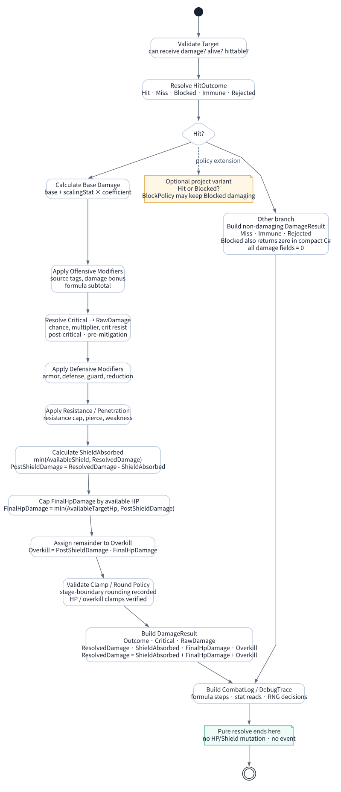
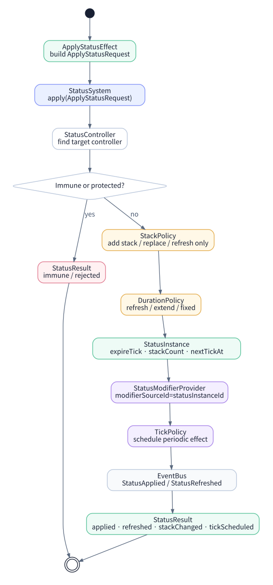
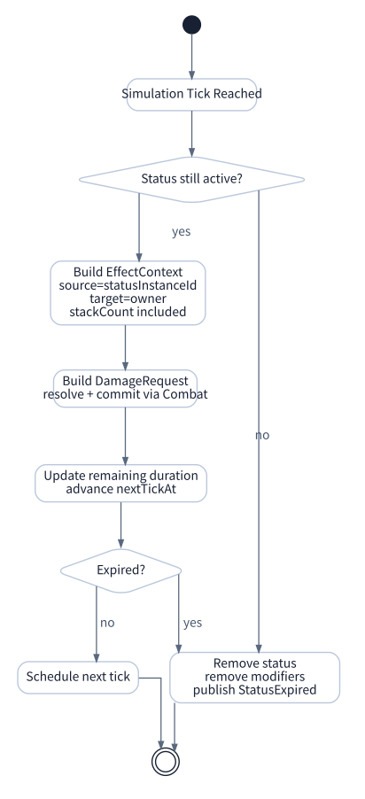

Fireball Case Study
Fireball은 Skill, Effect, Combat, Status, Stat, Core Runtime이 한 번에 연결되는 대표 예제다. 이 페이지는 “스킬을 눌렀다”가 어떻게 마나 소모, 시전 타임라인, 피해 계산, Burn 상태, tick 피해, 이벤트 로그로 이어지는지 끝까지 추적한다.
학습 목표
하나의 입력이 Skill·Effect·Combat·Status를 통과하는 전체 실행과 실패 분기를 추적한다.
선수 개념
각 시스템의 요청·결과 객체와 SourceRef, commit 이후 이벤트 개념을 먼저 이해한다.
Fireball 전체 흐름
Fireball은 전체 프레임워크의 수직 슬라이스다. Skill은 행동 사용 가능 여부와 실행 타이밍을 담당하고, Effect는 DamageEffect와 ApplyStatusEffect(effect.apply-burn)를 요청하며, Combat은 피해를 계산하고, Status는 Burn을 유지한다. 아래 모든 수치는 Runtime Contract Lab의 단일 fixture와 같다.
1. SkillRequest
플레이어가 대상을 지정하면 불변 Skill command가 생성된다. actor와 이번 실행을 나타내는 command/source, target, definition 버전, simulation tick, root seed를 담는다. 이때 아직 마나가 차감되거나 피해가 적용되지 않는다.
{
"commandId": "command.fireball.cast.0001",
"actorId": "entity.caster",
"targetId": "entity.target",
"skillDefinitionId": "skill.fireball",
"requestedTick": 18240,
"rootSeed": 61710
}2. SkillValidator / Cost / Timeline
| 검사 항목 | 판정 | 실패 시 결과 |
|---|---|---|
| 배운 스킬인가 | SkillBook에서 skill.fireball 보유 확인 | SkillResult.failedReason = NotLearned |
| 마나가 충분한가 | mana current ≥ 20 | OutOfResource |
| 쿨다운 중인가 | cooldownRemaining = 0 | cooldown-active |
| 상태 이상인가 | silence, stun, disarm 태그 없음 | BlockedByStatus |
| 사거리와 시야 | target 존재, target HP > 0 | InvalidTarget |
검증이 통과되면 CostPolicy가 마나 20을 예약한다. release marker에서 비용·쿨다운·EffectBundle을 하나의 commit plan으로 확정하며, 중간 operation이 실패하면 모두 폐기한다.
3. EffectBundle
release marker에 도달하면 SkillExecutor는 EffectContext를 만들고 EffectBundle을 실행한다. Fireball은 피해를 먼저 commit한 뒤 그 도메인 사실로 Burn 적용 reaction을 만든다. Burn이 면역으로 실패해도 이미 commit된 피해 결과는 유지되도록
commit_then_react 정책을 사용한다.
{
"effectBundle": {
"policy": "commit_then_react",
"effects": ["effect.fireball-damage"],
"reactions": [
{
"on": "DamageCommitted",
"when": "hit && targetAlive",
"effect": "effect.apply-burn"
}
]
}
}4. Combat Resolution

예시 값은 다음과 같다.
spell_power는 CombatFormula가 공격자 Stat snapshot에서 읽고, 대상의
fire_resistance
와 보호막은 CombatPipeline에서 적용한다.
| 항목 | 값 | 출처 |
|---|---|---|
| base damage | 24 | EffectDefinition |
| spell_power | 120 | attacker StatSystem |
| coefficient | 1.2 | CombatFormulaDefinition |
| critical multiplier | 1.5 | 결정론적 CriticalResolver |
| fire_resistance | 20% | defender StatSystem |
| shield | 40 | defender Resource/Status |
base = 24 + 120 × 1.2 = 168
critical = 168 × 1.5 = 252
resistance = roundHalfUp(252 × 0.80) = 202
shieldAbsorbed = 40
finalHpDamage = 202 - 40 = 1625. Status Application

이 fixture의 Burn은 6 simulation tick 동안 유지되고 +2, +4, +6에 periodic DamageEffect를 실행한다. 재적용은 중첩을 늘리지 않고 지속시간만 refresh한다. applyOn=hit이므로 보호막이 최초 피해를 모두 흡수해도 대상이 살아 있으면 적용된다. 적용 원천은 skill execution SourceRef로 추적하고 tick 예약은 statusInstanceId로 정리한다.
{
"status": "status.burn",
"durationTicks": 6,
"stackCount": 1,
"maxStacks": 1,
"tickIntervalTicks": 2,
"applyOn": "hit",
"periodicEffect": "effect.burn-tick-damage",
"appliedBySourceId": "command.fireball.cast.0001",
"statusInstanceId": "status-instance.10500ad49c7e40de",
"modifierSourceId": "status-instance.10500ad49c7e40de"
}6. Burn Tick

Burn tick의 공격 계수는 적용 당시 raw damage에서 snapshot하고, 대상의 현재 저항과 보호막은 매 tick 다시 읽는다. 이 fixture에서는 raw tick 30이 화염 저항 20%를 거쳐 매번 HP 24를 감소시키며, 세 번의 tick 뒤 대상 HP는 266이다. 따라서 매 tick도 DamageCalculated → DamageCommitted 경로를 거치며 치명 피해라면 EntityDefeated를 남긴다.
7. Event / DebugTrace
Fireball의 모든 실행 결과는 executionId, correlationId, definitionVersion으로 묶여야 한다. seed만으로 재현한다고 가정하지 않고 입력/스탯 스냅샷과 정렬·반올림 정책을 함께 남긴다.
sourceId: command.fireball.cast.0001
SkillCommitted
actor=entity.caster, manaSpent=20, cooldownReadyTick=18300
DamageCalculated trace
hit=true, critical=true, rawDamage=252, resolvedDamage=202
DamageCommitted
hpDamage=162, shieldAbsorbed=40
StatusApplied
status.burn durationTicks=6 nextTick=18242
DamageCommitted + StatusTicked
rawDamage=30, resolvedDamage=24 at +2/+4/+6
StatusExpired
finalTargetHp=266실패 분기
| 분기 | 처리 시스템 | 결과 |
|---|---|---|
| 마나 부족 | SkillValidator | SkillResult failed, 비용/쿨다운 없음 |
| resolve 뒤 대상 version 변경 | Commit precondition | VERSION_CONFLICT, 비용·쿨다운·피해 모두 미적용 |
| 명중 실패 | Combat HitResolver | 비용과 쿨다운은 commit, 피해와 Burn은 없음 |
| 대상이 status.immunity.burn | StatusSystem ImmunityChecker | Damage는 성공, Burn만 immune으로 실패 가능 |
| 대상에게 보호막 존재 | Combat ShieldResolver | DamageResult.shieldAbsorbed 기록. applyOn=hit이면 full shield에서도 Burn 적용 |
| Burn 재적용 | Status StackPolicy | stack은 1로 유지하고 duration refresh |
요약
책임 분리
Skill은 행동, Effect는 결과 요청, Combat은 피해 계산, Status는 지속 상태, Stat은 숫자 계산, Core는 공통 계약을 맡는다.
학습 포인트
Fireball 하나를 끝까지 추적하면 게임 시스템 프레임워크가 왜 계층화되어야 하는지 자연스럽게 이해할 수 있다.